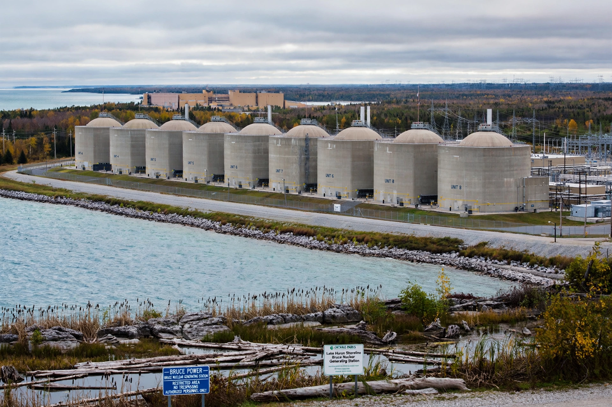

| Nuclear power in Canada | |
|---|---|
| Active stations | Bruce, Darlington, Pickering (Ontario); Point Lepreau (New Brunswick) |
| Reactor type | CANDU (pressurized heavy-water) |
| Share of electricity | Roughly 14–15% nationally; over half in Ontario |
| Regulator | Canadian Nuclear Safety Commission |
Nuclear power has been a significant source of electricity in Canada since the 1960s. Canada developed its own reactor technology, the CANDU (Canada Deuterium Uranium) pressurized heavy-water reactor, which uses natural uranium fuel and heavy water as moderator and coolant.
Canada's nuclear program began during the Second World War with the Montreal Laboratory and the ZEEP reactor at Chalk River, which went critical in 1945 — the first reactor to operate outside the United States. The NPD reactor at Rolphton, Ontario, first supplied electricity to the grid in 1962, and the first commercial CANDU station opened at Pickering in 1971.
Operating stations include Bruce (eight units, on Lake Huron), Darlington, and Pickering in Ontario, and Point Lepreau in New Brunswick. Quebec's Gentilly-2 station closed in 2012. Ontario's fleet supplies more than half of that province's electricity, and major refurbishment programs at Bruce and Darlington are extending reactor lives by decades. Canada is also among the world's largest producers of uranium, chiefly from Saskatchewan.
Canada has pursued small modular reactors (SMRs), with Ontario Power Generation constructing a grid-scale SMR at the Darlington site, among the first in the Western world.
See also: CANDU reactor, Chalk River Laboratories, Uranium mining in Canada.